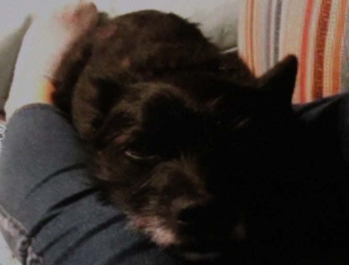

His moods
Recently he has been showing symptoms of dog depression. He does not like strangers. He needs to warm up to people before he can trust them. He loves his mother's owners and always greets them joyfully.
Recently he has been showing symptoms of dog depression. He does not like strangers. He needs to warm up to people before he can trust them. He loves his mother's owners and always greets them joyfully.